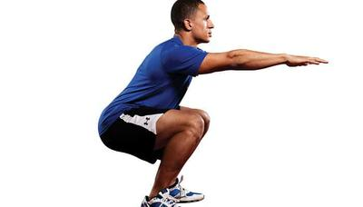

Tipos de sentadillas
Homepage
Our Clients
About Us
Privacy policy
Terms and Conditions
Photo gallery
Contacts
Welcome to Tipos de sentadillas
【 10 TIPOS de Sentadillas en CASA 】 + CONSEJOS
Sentadillas: tipos, beneficios y qué músculos se trabajan
10 tipos diferentes de hacer sentadillas para . - Thiomucase
Tipos de sentadilla y sus funciones - CrossFit
10 tipos de sentadillas y para qué sirven cada una – Revista .
10 tipos de sentadillas para maximizar tu . - El Ciudadano
Hay seis tipos de sentadillas, y ninguna es el mejor ejercicio .
12 variantes de sentadilla para tonificar piernas y glúteos
10 en casa · Sentadillas simples o tradicional · Sentadillas para aductores .
9 tipos de sentadillas y para qué sirve cada una | Blog .
9 tipos de sentadillas y para qué sirve cada una | Blog .
2021.06.18 21:58
<div class="mc_vtvc_con_rc" ourl="https://www.youtube.com/watch?v=glpTtuvV8kY"><div class="mc_vtvc_th b_canvas"><div class="cico" style="width:234px;height:131px;"><div class="rms_iac" style="height:131px;line-height:131px;width:234px;" data-height="131" data-width="234" data-alt="30 tipos de sentadillas para tener unas piernas fuertes" data-role="presentation" data-class="rms_img" data-src="https://tse2.mm.bing.net/th?id=OVP.gVtVMdSE-6lPJQwT_JKWaQEsDh" frameborder="0" allow="accelerometer; autoplay; encrypted-media; gyroscope; picture-in-picture" allowfullscreen>

Vivamus fermentum nibh
© Tipos de sentadillas. All rights reserved. | Photos by Fotogrph
Twitter
Pinterest
Google+
Pinterest